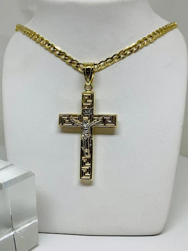
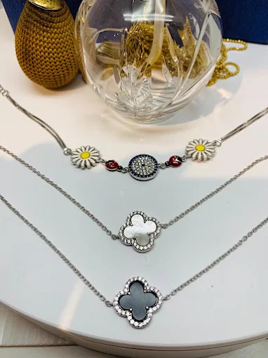
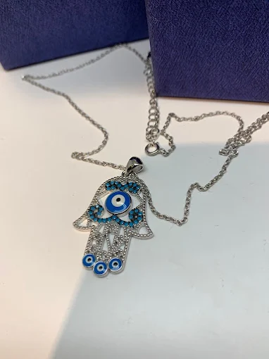
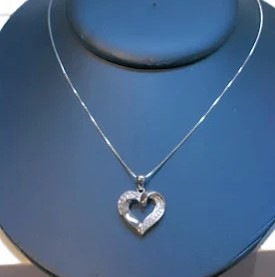
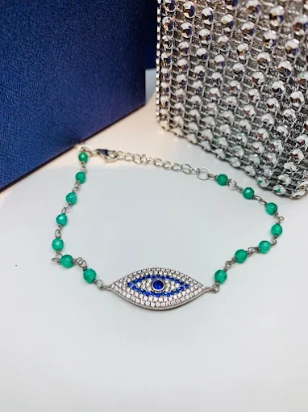
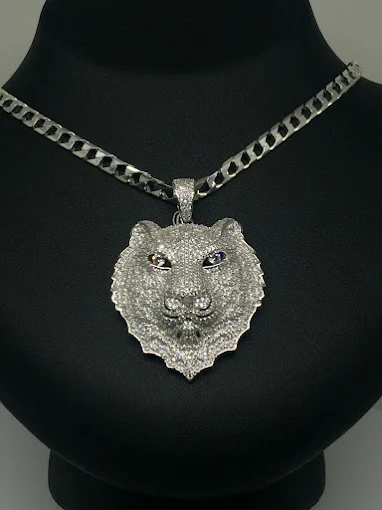
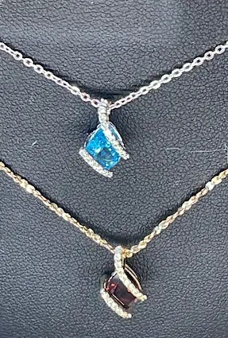
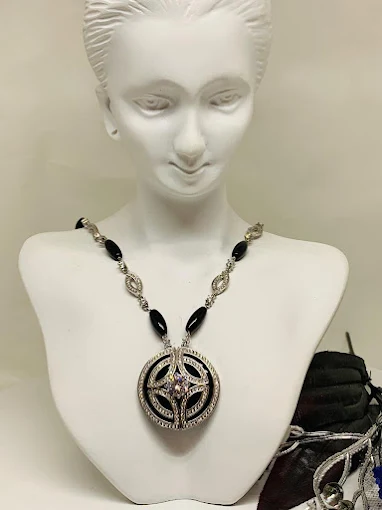

Necklaces That Reflect Your Style and Story
At Juliet Rose, our necklaces are designed to capture elegance and individuality in every detail. From delicate chains adorned with precious stones to bold statement pieces that turn heads, each necklace is thoughtfully crafted to suit your personal style. We offer custom designs, heirloom transformations, and expert repairs—ensuring that every piece you wear holds lasting beauty and meaning. Whether you're looking for a timeless gift or a modern design made just for you, our collection has something special for every occasion.

A bold and timeless piece featuring a detailed gold cross on a textured chain. This design blends faith and fashion, perfect for those who cherish classic religious symbolism with a modern touch.

A charming layered necklace set combining floral motifs with clover-shaped pendants. Delicate and feminine, it’s perfect for adding dimension and elegance to any look.

This silver-tone necklace showcases a detailed Hamsa hand adorned with multiple evil eyes. Symbolizing protection and luck, it’s a powerful and stylish spiritual accessory.

A minimalist design featuring a silver heart with a central stone. Understated and romantic, it’s ideal for everyday wear or as a heartfelt gift.

A unique piece with turquoise beads and a large evil eye pendant. This design fuses cultural tradition with vibrant color, offering a playful yet meaningful style.

Bold and fierce, this necklace features a highly detailed wolf head on a thick chain. A standout piece that symbolizes strength, loyalty, and independence.

This elegant necklace presents two vibrant gemstone pendants—blue and deep red—dangling from dainty silver chains. A versatile piece with timeless appeal and radiant color.

A dramatic black and silver necklace with a large orb-shaped pendant worn on a mannequin. With a touch of gothic elegance, this is ideal for bold statement wear or unique event styling.